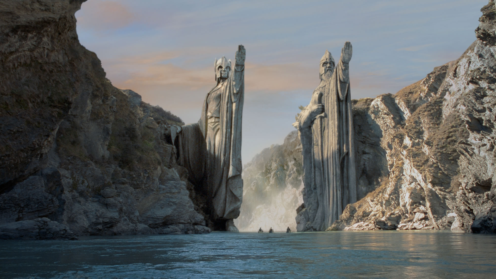
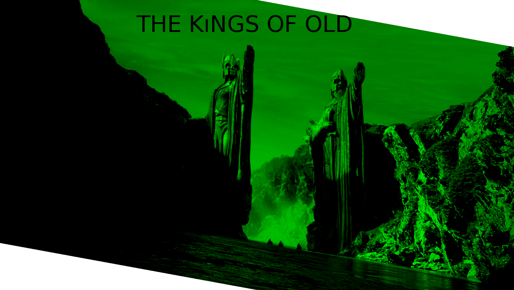

Homepage
Movies
References
Homepage
Movies
References
General
The Lord Of The Rings is a fantasy novel which was created by J.R.R Tolkien and have three volumes,
"Fellowship of the Ring", "The Two Towers" and "The Return Of The King". Its first volume "Fellowship of the Ring"
was published in 29 July 1954 and its third and last volume "The Return Of The King" published in 20 October 1955
but its writing process was between 1937 and 1949.Also beginning of the story was published in 1937 with name "The Hobbit".
About Content Of The Novel
Thousands of years before the beginning of the events in novel, Dark Lord Sauron forged in secret a master ring for control other rings of power that made by elves.When Sauron put the ring on his finger,
elves immediately notice Sauron and remove and hide them.After very long term of wars occur and at last Sauron was defeated by Last Alliance of Men and Elves.Then Isildur, son of the King of Men, cuts ring from Sauron's finger and takes it.
After a while, when Isildur in a journey to his kingdom, orcs lay ambush and they kill him when he trying to escape on the river.The Ring sinks in the river and some 2500 years, it became a mystery.Then, a hobbit whose friend is Smeagol finds it
but Smeagol kills his friend and takes it for him.He became a pitiful creature and lives some 500 years under the Misty Mountains.In year 2949 a dwarf companion began a journey to rescue their old dwarvish kindom Lonely Mountain
from Dragon.When they captured by Goblins of Misty Mountains, Bilbo encounters with Smeagol and takes ring which drops to ground and keep it some 50 years in Shire.
The Ring gives him a very long lifetime and very young appearance.On his 111th Birthday Party he decides to go Imladris, to the Elves and leaves the ring to Frodo Baggins.
18 years later Gandalf comes Shire and reveal ring's true identity that it's the one ring that made by Dark Lord Sauron.He warns Frodo to go Bree and Imladris.In his journey Frodo encounters several dangers but he
at last reachs Imladris.In there a Council take place that every kind of people presents and decided to destroy the Ring by throw it into the Mount Doom where it was made.
Frodo takes the responsibility and Aragorn,Boromir,Legolas,Gimli and three hobbits Sam, Peregrin and Meriadoc become a fellowship that named "Fellowship of The Ring".

